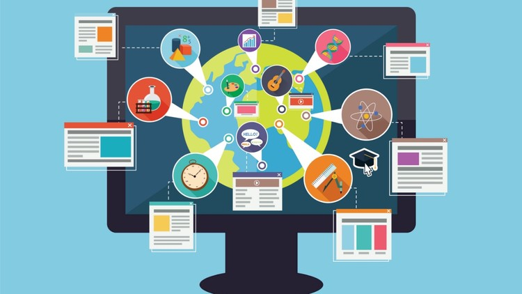
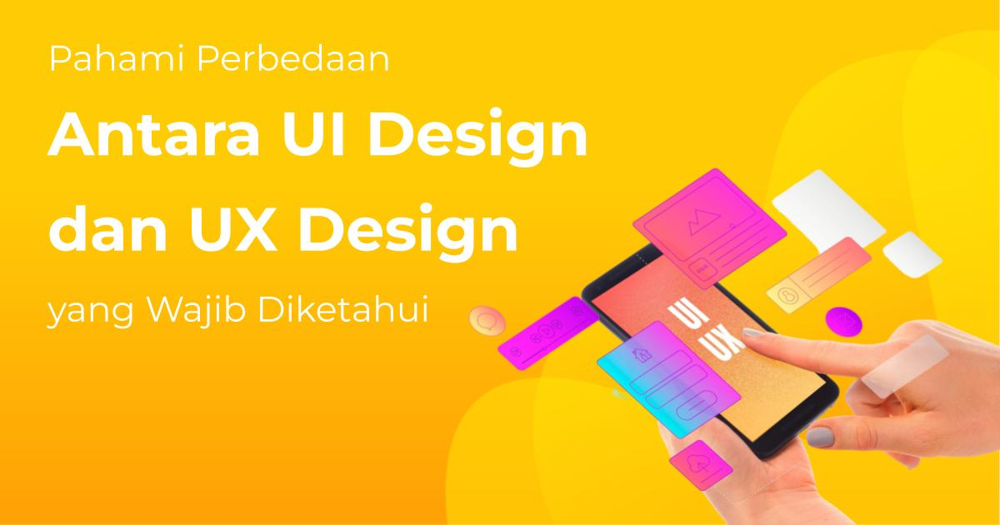
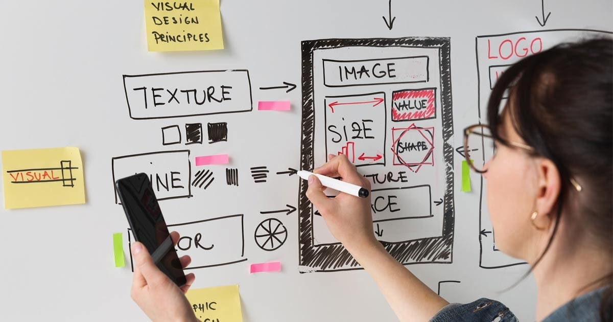

Apa Itu UX Design?
 UX Design (User Experience Design) adalah proses merancang pengalaman pengguna yang intuitif, mudah, dan menyenangkan saat menggunakan produk digital seperti website, aplikasi, atau perangkat lunak. Tujuan utamanya adalah untuk memenuhi kebutuhan pengguna dan menciptakan interaksi yang nyaman dan efisien. Istilah ini pertama kali dikenalkan oleh Don Norman pada tahun 1993 saat bekerja di Apple, yang menekankan pentingnya pengalaman pengguna dalam desain produk.Berbeda dengan UI Design yang fokus pada tampilan visual, UX Design lebih menitikberatkan pada alur dan kenyamanan pengguna saat berinteraksi dengan produk. Seorang UX designer menangani riset, perencanaan struktur, hingga pengujian pengalaman pengguna untuk memastikan produk yang dirancang benar-benar sesuai kebutuhan.
Seiring pesatnya perkembangan teknologi, profesi UX designer semakin dibutuhkan di berbagai bidang, mulai dari pengembangan website hingga augmented reality (AR). Untuk menjadi UX designer yang kompeten, dibutuhkan kombinasi hard skill seperti riset dan prototyping, serta soft skill seperti empati dan komunikasi. Dengan pemahaman yang kuat tentang pengguna dan portofolio yang baik, UX design menjadi pilihan karier yang menjanjikan di era digital.
Perbedaan UX design dan UI Design
 UX dan UI design sering disebut bersamaan dalam istilah UI/UX design, yang kerap membuat banyak orang bingung membedakan keduanya. Padahal, UX dan UI memiliki fokus serta peran yang berbeda dalam proses pengembangan produk digital. UX (User Experience) design adalah konsep yang luas dan strategis, bertujuan menciptakan pengalaman pengguna yang mulus dan menyenangkan. Ini mencakup aspek seperti riset pengguna, pembuatan alur kerja (user flow), dan perencanaan struktur informasi, termasuk sitemap dan journey pengguna dari awal hingga akhir saat berinteraksi dengan produk atau layanan.Sementara itu, UI (User Interface) design berfokus pada tampilan visual dan elemen interaktif dari produk, seperti warna, tipografi, tombol, ikon, ilustrasi, dan layout. UI designer bertugas menyusun setiap halaman dan komponen visual agar tidak hanya menarik dilihat, tetapi juga mudah digunakan. Jika UX mengatur strategi keseluruhan interaksi pengguna, maka UI menghidupkan strategi tersebut melalui desain yang dapat dilihat dan disentuh pengguna.
Perbedaan mendasar antara keduanya terletak pada fokusnya: UX design lebih berorientasi pada pengguna, sementara UI design lebih berorientasi pada produk. Meski begitu, keduanya saling melengkapi. UX yang baik tidak akan maksimal tanpa UI yang efektif dan estetis, begitu pula sebaliknya—desain visual yang menarik akan sia-sia jika pengalaman pengguna saat mengakses produk terasa membingungkan atau tidak nyaman.
Area Utama dalam UX Design
Pada dasarnya, UX design adalah bidang yang sangat beragam dengan banyak konsep. Namun, secara garis besar, ada 4 area utama di dalam prosesnya:◆ Experience Strategy (ExS) – mengacu pada strategi perusahaan untuk menciptakan pengalaman pengguna sebaik mungkin dari awal hingga akhir. Strategi ini mencakup penyelarasan antara tujuan bisnis dan kebutuhan pengguna, sehingga produk yang dihasilkan tidak hanya menarik secara komersial tetapi juga relevan dan bermanfaat bagi pengguna. Experience strategy juga melibatkan kolaborasi antar tim, termasuk tim desain, pengembang, hingga pemangku kepentingan.
◆ Interaction Design (IxD) – berfokus pada penerapan antarmuka yang menarik dan intuitif sehingga pengguna bisa menyelesaikan suatu proses secara efisien. Ini mencakup elemen-elemen seperti tombol, transisi halaman, animasi, hingga cara sistem merespons tindakan pengguna. Tujuan utama dari interaction design adalah menciptakan interaksi yang alami, lancar, dan minim hambatan agar pengalaman pengguna terasa menyenangkan.
◆ User Research (UR) – mengacu pada survei, wawancara, studi, dan tes apa pun yang dilakukan untuk memahami kebutuhan, pain point (kesulitan yang dialami calon pelanggan), dan preferensi pelanggan. Data ini kemudian digunakan untuk merancang produk atau layanan yang bisa menjadi solusi atas masalah mereka. User research penting dilakukan secara berkelanjutan karena perilaku dan harapan pengguna dapat berubah seiring waktu, teknologi, atau konteks penggunaan.
◆ Information Architecture (IA) – merupakan struktur informasi dalam suatu produk, yang membantu pengguna memahami cara menggunakan produk tersebut. IA mencakup pengorganisasian konten, navigasi, dan alur logis dari informasi yang disajikan. Tujuan utamanya adalah memastikan pengguna dapat menemukan informasi yang mereka butuhkan dengan mudah, tanpa merasa bingung atau tersesat saat menjelajahi produk atau layanan.
Apa Saja Tugas UX Designer?
 Tugas UX designer adalah meningkatkan pengalaman orang yang menggunakan suatu produk, layanan, atau sistem dengan menerapkan proses design thinking.Menurut Stanford d.school, ada 5 tahap dalam design thinking, yaitu: empathize, define, ideate, prototype, dan test.
◆ Empathize adalah proses memahami audiens target. Pada tahap ini, UX designer melakukan riset mendalam melalui wawancara, survei, observasi, dan metode pengumpulan data lainnya untuk mendapatkan insight dari perspektif pengguna. Tujuannya adalah memahami kebutuhan, tujuan, dan hambatan yang mereka alami saat berinteraksi dengan produk.
◆ Setelah mengumpulkan data, UX designer akan menganalisisnya dan melanjutkan ke tahap define, yaitu menetapkan tujuan yang ingin dicapai pengguna atau permasalahan utama yang perlu diselesaikan. UX designer juga membuat user persona, yaitu representasi fiktif dari target pengguna yang membantu dalam memahami perilaku pengguna dan menyusun user journey. Dari sini, sitemap atau struktur navigasi situs dapat dibangun dengan lebih terarah.
◆ Tahap ketiga adalah ideation. Di sini, UX designer melakukan brainstorming untuk menghasilkan berbagai solusi desain berdasarkan touch point atau titik interaksi pengguna. Contohnya, pada website: “Bagaimana agar tampilan tetap menarik di berbagai ukuran layar?” atau “Bagaimana meningkatkan kemudahan pengguna dalam menyelesaikan proses pembelian?” Tujuan tahap ini adalah menemukan pendekatan kreatif dan efektif untuk menyelesaikan masalah pengguna.
◆ Setelah ide terbentuk, UX designer masuk ke tahap prototype, yaitu membuat versi awal dari produk dalam bentuk rancangan kasar. Prototype dapat berupa sketsa di kertas, tampilan digital sederhana, atau simulasi interaktif. Untuk menyusun strukturnya, UX designer menggunakan teknik wireframing yang menggambarkan tata letak elemen dan alur pengguna di halaman produk.
◆ Prototype kemudian diuji pada tahap test. UX designer melakukan user testing untuk melihat bagaimana pengguna berinteraksi dengan desain dan mengumpulkan feedback secara langsung. Hasil pengujian ini digunakan untuk menyempurnakan desain dan memperbaiki bagian yang belum optimal.
Setelah menyelesaikan seluruh proses di atas, UX designer harus mempresentasikan temuannya kepada klien, stakeholder perusahaan, atau tim internal untuk mendapatkan persetujuan.
Setelah disetujui, mereka akan berkolaborasi dengan UI designer, interaction designer, dan web developer untuk mewujudkan ide tersebut menjadi produk akhir.
Namun, tugas UX designer dapat berbeda-beda tergantung skala dan industri perusahaan. Perusahaan besar biasanya memiliki spesialis untuk tiap tahapan, sedangkan perusahaan kecil mungkin hanya mempekerjakan satu UX designer yang menangani semua proses dari awal hingga akhir.
Jenis Proyek yang Bisa Dikerjakan UX Designer
Sebelum memulai karier sebagai UX designer, Anda perlu membuat portofolio yang menunjukkan pengalaman dan keahlian Anda. Berikut beberapa jenis proyek yang sebaiknya ada dalam portofolio UX design:
1. Desain Website
Website adalah salah satu proyek dasar yang wajib dimiliki oleh seorang UX designer. Jenis website yang bisa dirancang sangat beragam, mulai dari blog pribadi, toko online, hingga situs perusahaan. Setiap jenis memiliki tujuan dan audiens yang berbeda, sehingga pendekatan UX-nya pun harus disesuaikan. Sebagai contoh, Studio Neat menggunakan desain minimalis yang hanya menampilkan produk terlaris di halaman utama agar tidak membingungkan pengunjung. Sementara itu, Sephora menyajikan tiga kategori utama di homepage, lengkap dengan kolom pencarian yang efektif. Pendekatan minimalis ini membantu pengunjung menemukan apa yang mereka butuhkan dengan cepat dan nyaman.
2. Landing Page
Landing page dirancang untuk menghasilkan konversi, seperti mendorong pengunjung berlangganan newsletter, mengunduh eBook, atau melakukan pembelian. Dalam hal ini, UX designer memiliki peran penting dalam menyusun halaman yang interaktif dan mengarahkan pengguna ke tindakan yang diinginkan. Desain visual yang simpel dan menarik, copywriting yang persuasif, serta call-to-action (CTA) yang jelas dan menonjol adalah elemen utama dari landing page yang efektif. Contohnya dapat dilihat pada Airbnb, yang memiliki landing page dengan tampilan sederhana dan alur pendaftaran host yang mudah diikuti hanya dalam enam langkah.
3. Desain Aplikasi, Software, dan Game
UX design juga sangat penting dalam pengembangan aplikasi mobile, software, dan video game. Contohnya adalah aplikasi Uber, yang memiliki antarmuka sederhana dan panduan langkah-langkah yang jelas untuk membantu pengguna baru memesan transportasi dengan mudah. Di sisi lain, desain UX dalam game lebih kompleks karena harus mengikuti alur dan skenario permainan yang dinamis. UX designer dalam proyek game biasanya bekerja sama dengan penulis cerita, UI designer, dan game designer untuk menciptakan pengalaman bermain yang menarik, mudah dipahami, dan tetap menantang.
4. Desain Suara
Bidang voice design atau desain suara merupakan cabang UX yang berkembang pesat, terutama seiring meningkatnya penggunaan asisten suara dan pencarian berbasis audio. UX designer di bidang ini harus memastikan bahwa interaksi suara terasa alami, mudah dipahami, dan memberikan respons yang membantu. Siri dari Apple adalah contoh sukses dari desain suara yang baik, karena tidak hanya dapat menjalankan perintah umum seperti menelepon atau membuka aplikasi, tetapi juga memiliki personifikasi yang membuat pengguna merasa sedang berbicara dengan asisten pribadi yang nyata.
5. Augmented Reality (AR)
Augmented Reality (AR) adalah teknologi yang menggabungkan elemen dunia nyata dengan visual digital seperti gambar, animasi, atau suara. Dalam konteks UX design, AR memberikan pengalaman interaktif yang imersif dan sangat berguna, terutama di industri e-commerce. Contohnya adalah IKEA Place, aplikasi AR yang memungkinkan pengguna mencoba lebih dari 2.000 produk IKEA secara virtual di ruang rumah mereka. UX designer di proyek seperti ini bertanggung jawab untuk menciptakan antarmuka yang intuitif, realistis, dan mendorong pengguna untuk langsung melakukan transaksi dengan lebih percaya diri.
Skill yang Wajib Dimiliki UX Designer
Kesuksesan karier di bidang UI/UX design sangat ditentukan oleh skill dan pengetahuan yang Anda miliki. Oleh karena itu, di bagian ini kami akan membahas berbagai skill yang harus dimiliki oleh UX designer.
Hard Skill
Hard skill mengacu pada kemampuan teknis yang harus dimiliki oleh seorang UX
designer untuk menjalankan tugasnya secara efektif. Salah satu hard skill utama adalah desain visual,
yang mencakup pemahaman tentang prinsip desain grafis, desain interaksi, serta arsitektur informasi (IA)
untuk menciptakan tampilan antarmuka yang estetis sekaligus fungsional. Selain itu, riset pengguna juga
menjadi keahlian penting, yakni kemampuan untuk melakukan atau menganalisis metode riset seperti
wawancara, survei, atau focus group discussion guna mendapatkan insight mendalam tentang kebutuhan dan
perilaku audiens target.
Kemudian, UX designer juga perlu memiliki kemampuan analisis data, yaitu mengolah data mentah dari hasil
riset atau pengujian untuk menemukan pola dan informasi penting yang dapat mendukung pengambilan
keputusan desain. Terakhir, keterampilan pembuatan prototype sangat dibutuhkan. Ini adalah proses
menciptakan versi awal dari produk, yang digunakan untuk pengujian dan evaluasi oleh pengguna. Tujuannya
adalah mendapatkan masukan yang konkret agar kualitas produk atau layanan dapat ditingkatkan sebelum
dirilis secara penuh.
Soft Skill
Soft skill adalah kemampuan internal yang sangat penting bagi seorang UX designer,
karena berperan besar dalam memahami kebutuhan pengguna, menjalin kerja sama dengan tim lintas fungsi,
serta mendorong pengembangan diri secara berkelanjutan. Salah satu soft skill utama adalah empati, yaitu
kemampuan untuk memahami emosi dan motivasi pengguna. Seorang UX designer yang empatik akan meluangkan
waktu untuk benar-benar memahami perasaan dan kebutuhan pelanggan agar dapat merancang solusi yang tepat
sasaran.
Selain itu, kemampuan komunikasi yang baik juga sangat krusial. Seorang UX designer harus mampu
menyampaikan ide dan gagasan secara jelas dan meyakinkan, baik kepada klien, stakeholder, maupun anggota
tim lainnya. Dalam praktiknya, UX design tidak bisa dilakukan secara individu saja. Kolaborasi menjadi
kunci, karena Anda akan bekerja bersama UI designer, web developer, analis bisnis, serta berbagai pihak
lain yang terlibat dalam pengembangan produk.
Keingintahuan juga merupakan aspek penting, karena dunia UX terus berkembang dan menuntut para desainer
untuk terus belajar dan menemukan ide-ide baru. Dibutuhkan pula pemikiran terbuka agar Anda bisa
menerima saran dan kritik dengan lapang dada serta mampu beradaptasi dengan berbagai perubahan.
Terakhir, berpikir kritis menjadi bekal dalam menganalisis masalah inti dan menghasilkan solusi inovatif
yang tidak hanya kreatif, tetapi juga efektif dan relevan bagi pengguna.
Jenjang Karier dan Besar Gaji UX Designer
Karier sebagai UX designer memiliki jenjang yang jelas dan prospek yang
menjanjikan, baik di perusahaan rintisan maupun perusahaan besar. Seorang pemula biasanya memulai dari
posisi Junior UX Designer, yang fokus pada riset pengguna dasar, pembuatan wireframe sederhana, serta
membantu desainer senior. Di Indonesia, posisi ini memiliki gaji sekitar Rp5 hingga 9 juta per bulan.
Setelah memiliki pengalaman 2–4 tahun, seseorang bisa naik menjadi UX Designer tingkat menengah, dengan
tanggung jawab lebih besar dalam mengelola proses desain secara menyeluruh dan berkomunikasi langsung
dengan stakeholder. Gaji pada level ini berkisar antara Rp10 hingga 20 juta per bulan.
Dengan pengalaman lebih dari 4–5 tahun, posisi Senior UX Designer dapat diraih. Pada level ini, seorang
desainer tidak hanya mengelola proyek penting, tetapi juga membimbing desainer yang lebih junior dan
menyusun strategi pengalaman pengguna. Gaji senior UX designer bisa mencapai Rp20 hingga 35 juta per
bulan. Selanjutnya, jenjang karier bisa berlanjut ke posisi Lead UX Designer atau UX Design Manager,
yang memimpin tim desain dan terlibat dalam pengambilan keputusan strategis terkait produk dan pengguna,
dengan gaji antara Rp30 hingga 50 juta per bulan.
Pada tingkat manajerial yang lebih tinggi, terdapat posisi Head of UX atau UX Director, yang bertanggung
jawab atas keseluruhan strategi pengalaman pengguna lintas produk dan layanan. Gaji di level ini bisa
melebihi Rp50 juta per bulan. Puncak karier UX berada di posisi Chief Experience Officer (CXO), yang
mengatur pengalaman pelanggan di seluruh aspek bisnis dan biasanya ditemukan di perusahaan berskala
besar atau global. Di posisi ini, gaji bisa mencapai Rp70 hingga lebih dari Rp100 juta per bulan. Tentu
saja, angka-angka tersebut bisa bervariasi tergantung pada industri, lokasi, dan skala perusahaan.